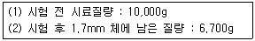
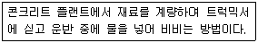
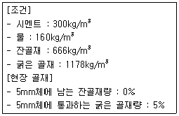

콘크리트기능사 (2015-04-04 기출문제)
1과목: 콘크리트재료
1. 다음은 아래 조건시의 굵은골재의 마모시험 결과 값이다. 이 중 맞는 것은?

- 조기강도는 크나, 장기강도가 작아진다.
- 워커빌리티가 좋아진다.
- 블리딩이 감소한다.
- 수밀성 및 화학저항성이 크다.
(정답률: 58%)

2. 일반적으로 콘크리트를 구성하는 재료 중에서 부피가 가장 큰 것부터 작은 순으로 나열한 것은?
- 골재 ＞ 공기 ＞ 물 ＞ 시멘트
- 골재 ＞ 물 ＞ 시멘트 ＞ 공기
- 물 ＞ 시멘트 ＞ 골재 ＞ 공기
- 물 ＞ 골재 ＞ 시멘트 ＞ 공기
(정답률: 74%)
3. 잔골재의 절대건조상태의 무게가 100g, 표면 건조 포화상태의 무게가 110g, 습윤상태의 무게가 120g이었다면 이 잔골재의 흡수율은?
- 5%
- 10%
- 14%
- 20%
(정답률: 74%)
4. 가경식 믹서를 사용하여 콘크리트 비비기를 할 경우 비비기 시간은 믹서 안에 재료를 투입한 후 얼마 이상을 표준으로 하는가?
- 1분
- 30초
- 1분 30초
- 2분
(정답률: 91%)
5. 모르타르 또는 콘크리트를 압축공기에 의해 뿜어 붙여서 만든 콘크리트로 비탈면의 보호, 교량의 보수 등에 쓰이는 콘크리트는?
- 진공 콘크리트
- 프리플레이스트 콘크리트
- 숏크리트
- 수밀 콘크리트
(정답률: 82%)
6. 콘크리트의 슬럼프 시험에 대한 설명으로 옳은 것은?
- 콘크리트가 내려앉은 길이를 5mm의 정밀도로 측정한다.
- 시료는 슬럼프 콘의 높이를 3등분하여 3층으로 나누어 넣고 가운데층만 25회 다진다.
- 슬럼프 콘에 시료를 채우고 벗길 때까지의 전작업 시간은 3분 30초 이내로 한다.
- 슬럼프 콘 벗기는 작업은 10초 정도로 천천히 해야 한다.
(정답률: 64%)
7. 굳지 않은 콘크리트의 공기 함유량 시험방법 중에서 보일(Boyle)의 법칙을 이용하여 공기량을 구하는 것은?
- 주수압력법
- 공기실 압력법
- 무개법
- 체적법
(정답률: 86%)
8. 표면 건조 포화상태 시료의 질량이 4,000g이고, 물속에서 철망태와 시료의 질량이 3,070g이며 물속에서 철망태의 질량이 580g, 절대건조상태 시료의 질량이 3,930g일 때 이 굵은골재의 절대건조상태의 밀도를 구하면? (단, 시험온도에서의 물의 밀도는 1g/cm3이다.)
- 2.30g/cm3
- 2.40g/cm3
- 2.50g/cm3
- 2.60g/cm3
(정답률: 42%)
9. 다음 중 시멘트의 비중을 시험할 때 사용되는 기구는?
- 르샤틀리에 병
- 블레인 투과장치
- 길모어 침
- 비카 침
(정답률: 77%)
10. 수중 콘크리트에 대한 설명 중 옳지 않은 것은?
- 콘크리트를 수중에 낙하시키지 말아야 한다.
- 수중에 물의 속도가 5cm/sec 이상일 때에 한하여 시공한다.
- 트레미나 포대를 사용한다.
- 정수중에 치면 더욱 좋다.
(정답률: 67%)
11. 시멘트를 저장할 때 몇 포 이상 쌓아올려서는 안 되는가?
- 10포
- 13포
- 15포
- 20포
(정답률: 83%)
12. 시멘트가 풍화하면 그 성질이 달라진다. 맞는 것은?
- 비중이 커진다.
- 수화열이 커진다.
- 응결, 경화가 늦어진다.
- 강도가 증진된다.
(정답률: 73%)
13. 시멘트 분류할 때 혼합 시멘트에 해당하지 않는 것은?
- 고로 슬래그 시멘트
- 플라이 애시 시멘트
- 포졸란 시멘트
- 내화물용 알루미나 시멘트
(정답률: 78%)
14. 1g의 시멘트가 가지고 있는 전체 입자의 총 겉넓이를 무엇이라 하는가?
- 비표면적
- 총표면적
- 단위 표면적
- 유효 표면적
(정답률: 69%)
15. 분말도가 높은 시멘트에 관한 설명 중 옳지 않은 것은 어떤 것인가?
- 발열량이 커서 균열이 쉽다.
- 수화작용이 빠르다.
- 풍화하기 쉽다.
- 조기강도가 작다.
(정답률: 73%)
16. 잔골재 표면수 측정시험에서 동일 시료에 계속 두 번 시험하였을 때 허용측정 오차는?
- 0.1%
- 0.2%
- 0.3%
- 0.4%
(정답률: 30%)
17. 골재의 안정성 시험에 대한 설명 중 옳지 않은 것은?
- 시료를 금속제 망태에 넣고 시험용 용액을 24시간 담가 둔다.
- 무게비가 5% 이상인 무더기에 대해서만 시험을 한다.
- 용액은 자주 휘저으면서 21±1.0°C의 온도로 48시간 이상 보존 후 시험에 사용한다.
- 황산나트륨 포화용액으로 인한 골재의 부서짐 작용에 대한 저항성을 시험한다.
(정답률: 45%)
18. 잔골재의 실체적률이 75%이고, 밀도가 2.65g/cm3일 때 빈틈률은?
- 28%
- 25%
- 66%
- 3%
(정답률: 68%)
19. 조립률 3.0의 모래와 7.0의 자갈을 중량비 1:3비율로 혼합할 때의 조립률을 구한 것 중 옳은 것은?
- 4.0
- 5.0
- 6.0
- 7.0
(정답률: 69%)
20. 레디믹스트 콘크리트를 사용했을 때의 특징 중 옳지 않은 것은?
- 균등질의 좋은 콘크리트를 얻을 수 있다.
- 대량 콘크리트의 연속치기가 가능하다.
- 경비가 많이 든다.
- 공사기간이 단축된다.
(정답률: 67%)
2과목: 콘크리트시공
21. 벨트 컨베이어에 의한 콘크리트를 운반할 경우 재료의 분리를 방지하기 위해 설치 하는 깔대기의 길이는 최소 얼마 이상이어야 하는가?
- 40cm 이상
- 50cm 이상
- 60cm 이상
- 70cm 이상
(정답률: 45%)
22. 콘크리트의 양생에 대한 설명으로 틀린 것은?
- 기온이 상당히 낮은 경우에는 일정한 기간 동안 열을 주거나 보온에 의해 온도 제어를 한다.
- 콘크리트 양생기간 중에는 진동, 충격의 작용을 무시해도 된다.
- 촉진 양생을 할 때는 콘크리트에 나쁜 영향이 없도록 해야 한다.
- 콘크리트의 수분 증발을 막기 위해서는 콘크리트의 표면에 매트, 가마니등을 물에 적셔서 덮는 등의 습윤상태로 보호해야 한다.
(정답률: 85%)
23. 거푸집의 외부에 진동을 주어 내부 콘크리트를 다지는 기계로서 터널의 둘레 콘크리트나 높은 벽 등에 사용되는 것은?
- 거푸집 진동기
- 내부 진동기
- 콘크리트 피니셔
- 표면 진동기
(정답률: 63%)
24. 콘크리트 속의 공기량에 대한 설명이다. 잘못된 것은?
- 공기연행제에 의하여 콘크리트 속에 생긴 공기를 연행공기라 하고 이 밖에 공기를 갇힌 공기라 한다.
- 공기연행 콘크리트에서 공기량이 많아지면 압축강도가 커진다.
- 공기연행 콘크리트의 알맞은 공기량은 콘크리트 부피의 4~7%를 표준으로 한다.
- 공기연행 공기량은 시멘트의 양, 물의 양, 비비기 시간 등에 따라 달라진다.
(정답률: 64%)
25. 공기연행 감수제 사용한 콘크리트의 특징으로 틀린 것은?
- 동결융해에 대한 저항성이 증대된다.
- 굳지 않은 콘크리트의 워커빌리티를 개선하고 재료의 분리를 방지한다.
- 건조수축을 감소시킨다.
- 수밀성이 감소하고 투수성이 증가한다.
(정답률: 58%)
26. 철근 콘크리트에서 구조물의 단면이 큰 경우 굵은 골재의 최대치수는 다음 중 어느 것을 표준으로 하는가?
- 25mm
- 40mm
- 50mm
- 100mm
(정답률: 69%)
27. 일 평균기온이 15°C 이상일 때, 보통 포틀랜드 시멘트를 사용한 콘크리트의 습윤 양생기간의 표준은?
- 3일
- 5일
- 7일
- 14일
(정답률: 64%)
28. 콘크리트의 블리딩 시험에 대한 설명으로 틀린 것은?
- 시험하는 동안 30±3°C의 온도를 유지한다.
- 콘크리트를 용기에 3층으로 넣고, 각 층을 다짐대로 25번씩 다진다.
- 용기에 채워 넣을 때 콘크리트의 표면이 용기의 가장자리에서 3±0.3cm 낮아지도록 고른다.
- 콘크리트의 재료 분리 정도를 알기 위한 시험이다.
(정답률: 65%)
29. 레디믹스트 콘크리트를 제조와 운반 방법에 따라 분류할 때 아래 표의 설명이 해당하는 것은?

- 센트럴 믹스트 콘크리트
- 슈링크 믹스트 콘크리트
- 가경식 믹스트 콘크리트
- 트랜싯 믹스트 콘크리트
(정답률: 75%)
30. 콘크리트의 시방배합으로 각 재료의 양과 현장골재의 상태가 아래와 같을 때 현장배합에서 굵은 골재의 양은 얼마로 하여야 하는가?

- 116kg/m3
- 1178kg/m3
- 1240kg/m3
- 1258kg/m3
(정답률: 37%)
31. 콘크리트 치기의 진동 다지기에 있어서 내부 진동기로 똑바로 찔러 넣어 진동기의 끝에 아래층 콘크리트 속으로 어느 정도 들어가야 하는가?
- 0.1m
- 0.2m
- 0.3m
- 0.4m
(정답률: 81%)
32. 지름 100mm, 높이 200mm인 콘크리트 공시체로 압축강도 시험을 실시한 결과 공시체 파괴시 최대하중이 231kN이었다. 이 공시체의 압축강도는?
- 29.4MPa
- 27.4MPa
- 25.4MPa
- 23.4MPa
(정답률: 48%)
33. 규격 150mmx150mmx530mm인 콘크리트 공시체에 지간길이 450mm인 3등분 하중장치로 휨강도 시험을 실시한 결과, 공시체가 지간의 중앙에서 파괴되면서 시험기에 나타난 최대하중은 36kN 이었다. 이 공시체의 휨강도는?
- 4.8MPa
- 4.2MPa
- 3.6MPa
- 3.0MPa
(정답률: 42%)
34. 포졸란을 사용한 콘크리트의 특징으로 틀린 것은?
- 워커빌리티가 좋아진다.
- 조기강도는 크나, 장기강도가 작아진다.
- 블리딩이 감소한다.
- 수밀성 및 화학 저항성이 크다.
(정답률: 73%)
35. 슬럼프 콘의 규격으로 옳은 것은?
- 윗면의 안지름이 150mm, 밑면의 안지름이 300mm, 높이 300mm
- 윗면의 안지름이 150mm, 밑면의 안지름이 200mm, 높이 300mm
- 윗면의 안지름이 100mm, 밑면의 안지름이 300mm, 높이 300mm
- 윗면의 안지름이 100mm, 밑면의 안지름이 200mm, 높이 300mm
(정답률: 87%)
36. 콘크리트를 제조할 때 각 재료의 계량에 대한 허용오차 중 골재의 허용오차로 옳은 것은?
- ±1%
- ±2%
- ±3%
- ±4%
(정답률: 79%)
37. 일반 수중 콘크리트에 대한 설명으로 틀린 것은?
- 트레미, 콘크리트 펌프 등에 의해 타설된다.
- 물-결합재비는 50% 이하여야 한다.
- 단위 시멘트량은 300kg/m3이상으로 한다.
- 콘크리트는 수중에 낙하시키지 않아야 한다.
(정답률: 77%)
38. 수송관 속의 콘크리트를 압축 공기에 의해 압송하는 것으로서 콘크리트 펌프와 같이 터널 등의 좁은 곳에 콘크리트를 운반하는 데에 편리한 콘크리트 운반기계는?
- 벨트 컨베이어
- 버킷
- 콘크리트 플레이서
- 슈트
(정답률: 76%)
39. 시멘트 비중시험 결과 시멘트의 질량은 64g, 처음 광유 눈금을 읽은 값은 0.4mL, 시료를 넣은 후 광유 눈금을 읽은 값은 20.9mL였다. 이 시멘트의 비중은 얼마인가?
- 3.09
- 3.12
- 3.15
- 3.18
(정답률: 58%)
40. 시멘트의 응결속도에 영향을 주는 요소에 대한 설명으로 틀린 것은?
- 분말도가 크면 응결은 빨라진다.
- 석고의 첨가량이 많을수록 응결은 지연된다.
- 온도가 낮을수록 응결은 빨라진다.
- 풍화된 시멘트는 일반적으로 응결이 지연된다.
(정답률: 68%)
3과목: 콘크리트 재료시험
41. 주로 원자로 등에서 방사선 차폐 콘크리트를 만드는 데 사용되는 골재는?
- 중량골재
- 경량골재
- 보통골재
- 부순골재
(정답률: 69%)
42. 콘크리트용 모래에 포함되어 있는 유기 불순물 시험에 대한 설명으로 옳은 것은?(오류 신고가 접수된 문제입니다. 반드시 정답과 해설을 확인하시기 바랍니다.)
- 사용하는 수산화나트륨 용액은 물 50에 수산화나트륨 50의 질량비로 용해 시킨 것이다.
- 시료는 대표적인 것을 취하고 절대건조상태로 건조시켜 4분법을 사용하여 약 5kg을 준비한다.
- 시험에 사용할 유리병은 노란색으로 된 유리병을 사용하여야 한다.
- 시험의 결과 24시간 정치한 잔골재 상부의 용액색의 표준용액보다 연할 경우 이 모래는 콘크리트용으로 사용할 수 없다.
(정답률: 50%)
43. 서중 콘크리트를 칠 때의 콘크리트 온도는 몇 °C 이하여야 하는가?
- 25°C
- 30°C
- 35°C
- 40°C
(정답률: 62%)
44. 시멘트의 응결시간을 측정하는 시험방법은?
- 브레인 공기투과장치
- 비카장치, 길모어장치
- 시멘트 비중시험
- 오토클레이브 장치
(정답률: 72%)
45. 골재의 표면수량에 대한 설명 중 옳지 않은 것은?
- 골재의 습윤상태에서 표면건조 포화상태의 수분을 뺀 물의 양이다.
- 시방배합을 현장배합으로 보정할 경우 표면수량을 고려한다.
- 절대건조상태에서 표면건조 포화상태로 되기까지 흡수된 물의 양이다.
- 골재의 표면에 묻어 있는 물의 양이다.
(정답률: 53%)
46. 콘크리트 인장강도 시험에 대한 설명 중 틀린 것은?
- 시험체를 매초 0.06±0.04MPa의 일정한 비율로 증가하도록 하중을 가한다.
- 시험체의 지름은 150mm 이상으로 한다.
- 시험체의 지름은 굵은골재 최대치수의 3배 이상이어야 한다.
- 시험체는 습윤상태에서 시험을 한다.
(정답률: 38%)
47. 콘크리트 휨강도 시험에 대한 설명으로 옳지 않은 것은?
- 공시체의 길이는 높이의 3배보다 8cm 이상 더 커야 한다.
- 공시체는 성형 후 16시간 이상 3일 이내에 몰드를 해체한다.
- 공시체의 한 변의 길이는 굵은골재 최대치수의 3배 이상으로 한다.
- 공시체가 지간 중심 3등분점의 바깥쪽에서 파괴시 그 시험 결과는 무효로 한다.
(정답률: 42%)
48. 다음 중 잔골재 밀도 측정시험에 사용되는 기계기구가 아닌 것은?
- 원뿔형 몰드
- 플라스크(ml)
- 향온 수조
- 철망태
(정답률: 46%)
49. 콘크리트를 타설한 후 다지기를 할 때 내부 진동기를 찔러 넣는 간격은 어느 정도가 적당한가?
- 25cm 이하
- 50cm 이하
- 75cm 이하
- 100cm 이하
(정답률: 78%)
50. 콘크리트의 혼화제에 대한 설명으로 가장 적합한 것은?
- 사용량이 시멘트 질량의 5% 정도 이상이 되어 그 자체의 부피가 콘크리트의 배합계산에 관계된다.
- 사용량이 콘크리트 질량의 1% 정도 이상이 되어 그 자체의 부피가 콘크리트의 배합계산에 관계된다.
- 사용량이 콘크리트 질량의 5% 정도 이하의 것으로서 그 자체의 부피는 콘크리트의 배합계산에서 무시된다.
- 사용량이 콘크리트 질량의 1% 정도 이하의 것으로서 그 자체의 부피는 콘크리트의 배합계산에서 무시된다.
(정답률: 60%)
51. 골재의 체가름 시험 과정에서 골재가 체눈에 끼인 경우 올바른 조치는?
- 체눈에 끼인 골재는 손으로 밀어 체를 통과시킨다.
- 체눈에 끼인 골재 알은 부서지지 않도록 빼내고 체에 남는 시료로 간주한다.
- 체눈에 끼인 골재는 통과된 시료로 간주한다.
- 체눈에 끼인 골재는 부서지지 않도록 빼내고 전체 시료량에서 제외한다.
(정답률: 59%)
52. 싣기 용량이 6m3인 트럭믹서의 1시간당 작업량은 얼마인가? (단, 작업효율 0.85, 사이클 타임 1시간이다.)
- 3.1m3/h
- 4.5m3/h
- 5.1m3/h
- 5.5m3/h
(정답률: 45%)
53. 다음 중 프리스트레스트 콘크리트에 대한 설명으로 옳지 않은 것은?
- 프리텐션 방식은 쉬스와 PS 강재의 간격을 특수한 모르타르로 채워야 한다.
- PS 강재에는 PS 강봉, PS 강선, PS 스트랜드 등이 사용된다.
- PS 강재가 원래의 상태로 돌아가려는 힘으로 콘크리트의 압축응력이 생기게 된다.
- 프리텐션 방식의 경우 프리스트레이싱을 할 때의 콘크리트 압축강도는 30MPa이상이어야 한다.
(정답률: 27%)
54. 콘크리트 양생방법 중 촉진 양생방법에 해당하지 않는 것은?
- 고주파양생
- 증기양생
- 오토클레이브양생
- 막양생
(정답률: 52%)
55. 다음의 포졸란 종류 중 인공산에 해당하는 것은?
- 화산재
- 플라이 애시
- 규조토
- 규산백토
(정답률: 80%)
56. 콘크리트 속에 많은 거품을 일으켜 부재의 경량화나 단열성을 목적으로 사용하는 혼화제는?
- 기포제
- 지연제
- 경화촉진제
- 감수제
(정답률: 82%)
57. 콘크리트 운반에 사용되는 슈트에 대한 설명으로 틀린 것은?
- 경사슈트를 사용할 경우에는 수평 2에 대해 연직 1의 경사로 한다.
- 슈트를 사용할 경우에는 원칙적으로 경사슈트를 사용하여야 한다.
- 연직슈트를 사용할 경우에 추가 슈트의 설치를 생략하기 위해 한 개의 슈트로 넓은 장소에 공급해서는 안 된다.
- 연직슈트를 사용할 경우에는 콘크리트의 투입구 간격, 투입 순서 등으로 검토하여 콘크리트가 한 곳에 모이지 않도록 한다.
(정답률: 56%)
58. 콘크리트의 인장강도에 대한 설명으로 옳지 않은 것은?
- 인장강도는 도로포장이나 수로 등에 중요시 된다.
- 압축강도와 달리 인장강도는 물-결합재비에 비례한다.
- 인장강도는 압축강도의 1/10~1/13배 정도로 작다.
- 인장강도는 철근 콘크리트 휨부재 설계시 무시한다.
(정답률: 32%)
59. 습윤상태의 굵은골재 질량이 5,600g이고 이 시료의 표면건조 포화상태 질량이 5,400g, 공기중 건조상태 질량이 5,100g이었다. 이 골재의 표면수율은?
- 3.7%
- 5.9%
- 6.3%
- 9.8%
(정답률: 39%)
60. 콘크리트에 공기량이 미치는 영향에 대한 설명으로 옳지 않은 것은?
- 콘크리트의 온도는 높을수록 공기량은 감소한다.
- 부배합일수록 공기량은 감소한다.
- AE제의 첨가량이 많을수록 공기량은 증가한다.
- 단위 잔골재량이 많을수록 공기량은 감소한다.
(정답률: 26%)